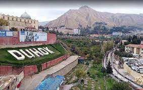

Dohuk, located in the Kurdistan Region of Iraq, is a city known for its picturesque landscapes, cultural richness, and historical significance. Nestled in the northern part of Kurdistan, Dohuk has a unique blend of ancient heritage and modern development. The city is characterized by its welcoming atmosphere, diverse communities, and a thriving market scene. Dohuk has played a vital role in preserving Kurdish traditions, and visitors can explore its historical sites, such as the Dohuk Citadel, and experience the warmth of Kurdish hospitality. The region's natural beauty, including the mesmerizing landscapes surrounding Dohuk, adds to its allure, making it a destination that captures both the essence of Kurdistan's past and the spirit of its vibrant present.
